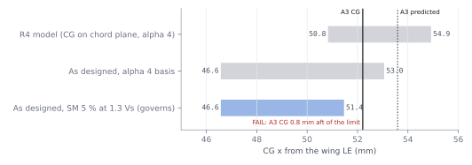
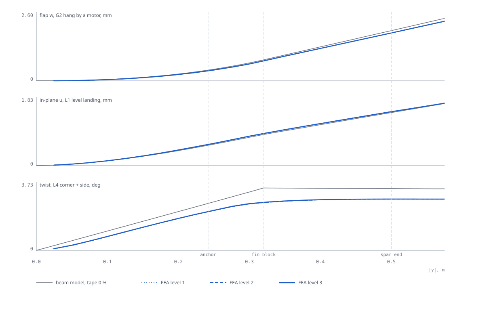
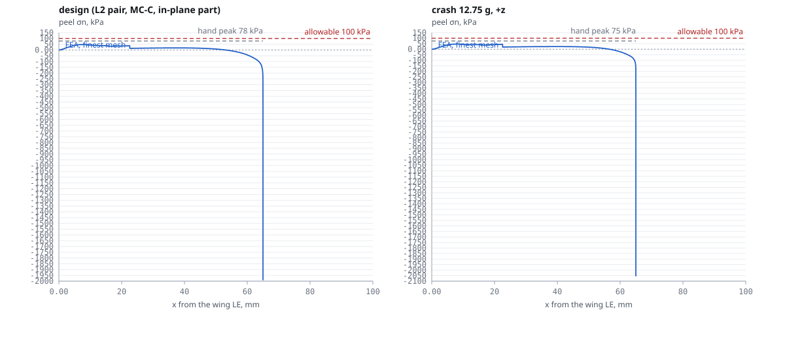
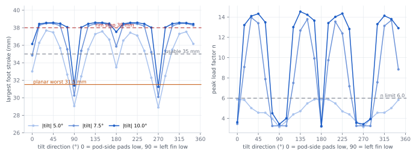
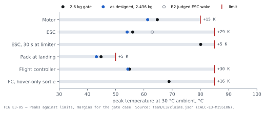

K09-L: a 2.6 kg quad tailsitter. One flying wing on four fixed motors, standing on its fin tips, built for $2,000.
A 1.15 × 0.32 m hot-wired XPS wing (S5010 section, one 22 × 20 mm carbon spar) with two foam-board fins at ±0.32 m span. A vertical carbon tube through each fin carries a SunnySky X3108S motor and APC 11 × 5.5MR prop at each end, four motors in an X, each canted 7° for hover yaw. It takes off as a quadcopter, pitches 90° nose-down for 16 m/s cruise on the same four motors, and pitches back up to land on four crushable feet. Two elevon pairs, one 4S 6500 mAh pack in a pod on the upper surface, ArduPilot Plane in tailsitter mode. One piece in one box: five minutes from car to armed, one person, one spanner.
Why K09-L, and when to reverse it
Chosen from 43 concepts after a morphological study, a trade matrix and a tie-break against the lean twin-boom quadplane K01. Reversible until the mid-December order.
The case
PROPOSED- $321 reserve
- the only shortlisted concept whose pessimistic reserve covers one $309 crash (lean K01 −$108, K19 −$76 against the same gate)
- ≈ 115 team-h
- pessimistic to first hover, week 3–4; a crash repair is ≈ $20 and 2–4 days by re-cutting a foam core
- 4 motors · 2 servos
- no tilt mechanism, no field joints, one-piece transport
- 92 % of hours
- Mar–Apr mornings (07–10) at the bay-shore station are ≤ 5 m/s: 5–5.7 usable mornings a week
Reverse to K01-lean if
- the $40 foam-board twin fails the 1 m hold in 5 m/s wind, or cannot complete a transition before the December order
- K01-lean's pessimistic reserve is verified ≥ $309 (tool loan in writing, board in stock, independent skeptic)
- RFS wind measures ≥ 1.4 × the RCMC1 station, or the team wants hover motor-out survivability
Mandatory before the order
- fly the twin on the real motors, FC and pack; fixed-wing tune first
- ≥ 10 h SITL and a stable ArduPilot Plane tailsitter build confirmed (F3: done, 2026-11-09)
- handheld anemometer at RFS vs RCMC1; early order ~20 Nov of electronics, packs and carbon tubes
One role per engineer, ten groups, 31 delivered
Each role does exactly one thing and writes a SUMMARY.md, a claims file the proof chain re-computes, and change requests the chief engineer decides. Status is the word each role gave its own work at A1-R5.
Every part has one owner and one allocation
Flying mass from the designers' parts.csv as rolled up by A3-R7, against the D-63 allocation. The bar is the share of the allocation used. Each folder holds SPEC.md, BUILD.md, parts.csv, interfaces.json, params.json and the Fusion module.
Nine roles re-ran on the settled CAD with grid convergence
Each report states the tool, why that fidelity is enough, the convergence study, a hand-calc cross-check and the requirement margins. Four requirements failed as designed and are fixed by decisions D-61 to D-73. Every number stays UNVERIFIED until the stand and flight tests close it.
 FIG B1-07
FIG B1-07Fins carry 1.23 × the hand drag (square board edges, proud tubes): CD0 0.0515 → 0.0579. Cruise at 16 m/s takes 235 W, leaving 16.2 min after the 2 min hover (11.9 pessimistic) against 5 min. Every B1 requirement passes; stall, 1.25 VH ≤ VD and the landing wind are thin.
- convergence
- fin A on 4 grids, GCI 9.8 → 5.8 %; fin B and S5010 on 3
- replaces
- commit a391d56 (unconverged: CD0 0.0786, 14.1 min)
 FIG B2-R4-01
FIG B2-R4-01Forward CG 0.0466 m with the CG 18.5 mm above the chord plane stalls at 11.99 m/s vs 12.0: R-STALL and R-TRANSITION pass by 0.05 %, so T-B2-STALL on the twin is the gate (D-71). At z 0.010 the mark fails by 0.1 % (CR-B2-20). Servo torque 3.49 of 3.9 kgf·cm.
- convergence
- SU2 3 grids; XFOIL 160 / 240 / 320 panels; hinge moment viscous ≤ 0.88 × inviscid
- open
- SU2 CLmax not converged; B1 / B2 CLmax differ 9 %

FIG B3-V3The raised CG moves the effective NP 3.4 mm forward at 1.3 Vs: the aft limit becomes 0.0514 m, A3's 0.0522 m was 0.77 mm aft (SM 4.76 %, FAIL) → D-62 range 0.0466–0.0514 m, bay 10 mm forward. Spiral t2 3.51 s (< 4 s). CAD fins beat the R4 rectangle: Cn_β 0.048–0.062.
- convergence
- 4 lattices, 692 → 4 676 vortices, GCI (Celik 2008); SU2 42k / 78k / 170k cells
- check
- own flat-plate VLM; hand NP-height formula within 0.4 %
 FIG B4-SIM-05
FIG B4-SIM-05Tube + board Cd in the slipstream: hand 1.48 → 0.599; download factor 1.038 → 1.025 (limit 1.06). Upper-prop hover 7.00 N at 5 491 rpm, T/W at the current cap 3.40. New edgewise H-force 0.43 N per prop in the pitch-over, handed to B3. Blade-to-tube gap 21.1 mm FAIL → D-61 (26.1 mm).
- convergence
- 3 grids, GCI 3.4 %; bare-cylinder validation +0.6 %
- check
- cruise section Cd 0.995 × B1's build-up

FIG C2-03Tip deflection within 5 % of the beam, in-plane within 1 %, wing 16 % stiffer in twist than the beam (aeroelastic claims conservative). Spar max 38.3 MPa, MS +8.1. New: foam at the block-pocket corners 203 vs 150 kPa at ultimate (MS −0.26) → R 3 mm edges and fillet beads (D-68).
- convergence
- 3 mesh levels; corner peak GCI 0.02 %
- still FAIL
- R-VIBRATION (tap test + notch planned)

FIG C3-FEA-02FEA overturns three hand passes: pod-to-wing bond R 0.868 → 1.405, aft stop peels the board at 408 kPa vs 50, forward-stop bed 391 kPa. Fixes proven in the model: feet bonded to the walls (R 0.559), a strut to the spar bridge (1.1 kPa). The forward-stop flange (CR-C3-15) is not modelled yet.
- convergence
- 4 mesh levels, finest 2 mm mean; crash corner singular (R 11.0, fillet CR-C3-17)
- decision
- D-69: strut, floor flange, wall brackets, +13.9 g
 FIG C4-S3
FIG C4-S3First station mode 262.4 / 255.5 Hz upper / lower: separation from 1P/2P 0.29 (need 0.20), R-VIBRATION met. The R4 tip FAIL does not reproduce: the drawn shoe gives face MS +0.11, not −0.54, because the two edge strips take the twist as a couple. T-C4-FIN-PROOF on an as-drawn article decides the cheek extension.
- convergence
- 3 meshes, Richardson; GCI 1.7 / 1.1 % on modes, 5.6 % on the cheek case; shoe corner does not converge
- open
- C6 reads C1's D-65 torsion 12.67 N·m: C4's set is stale by × 1.71

FIG C5-S1As designed, four landing requirements fail: a diagonal touchdown at 1.5 m/s bottoms a foot from 5° of tilt (need 10°), n 6.59 at 2.32 kg, side load 39.3 N (hand 22.9), shoe RF 0.22. The envelope that passes: 1.2 m/s at ≤ 10° in any direction. Decision D-65: 1.2 m/s rule, shoe wall 2.0 / rim 3.0 mm, n 6.6.
- convergence
- time-step study; shoe FEA GCI 0.35 %, 2.78 × the beam check
- next
- D5 draws the shoe fix, C5 re-runs; T-C5-DROP

FIG E3-05Every part stays inside its limit over the full mission from 15 to 30 °C, gate case and as designed. The CFD film coefficient (64.6 W/m²K) runs the ESC 6.9 K cooler than the hand estimate: peak 56.1 °C. Field-ambient ceiling 44.2 °C. Smallest margin: the pack at landing, +5.2 K on a 30 °C day.
- convergence
- 3 gmsh quad-layer grids
- tests
- T-E3-MOTOR-TAU, T-E3-ESC-PAD (H1 GT-04), T-E2-IR
Six phases done, one partial, three not started
Phases follow DESIGN-PROGRAM.workflow.js. Done means every active role in the phase delivered and the chief engineer dispositioned its change requests; it does not mean verified.
Top open issues
| # | Issue | Owner | Claim / request | Status |
|---|---|---|---|---|
| 1 | Fin station collar: C1's D-65 re-run raised the half-fin torsion 7.39 → 12.67 N·m; the drawn 15 mm collar reads RF 0.77 and C4's frozen set is stale by × 1.71. The fin station is not closed. | C6 · C4 · D3 | CL-C6-COLLAR-RF · CR-C6-37 / -38 | FAIL |
| 2 | Cruise power at the gate 246 W vs 240 W carried in params.json after B1's CD0 0.0579; E1 asks A1 to move the key or the L/D. | E1 · A1 | CL-E1-CRUISE-P-55 · CR-E1-51 | FAIL |
| 3 | Stall margin at the forward CG is +0.05 %, below the model's own uncertainty; fails by 0.1 % at the bottom of the CG height range. The twin's slow-flight stall test is the gate before ARSPD_FBW_MIN is frozen. | B2 · A1 · H2 | CL-B2R3-VS-GATE-FWD · CR-B2-20 · D-71 | UNVERIFIED |
| 4 | Spiral doubling time 3.51 s against the 4 s limit from the raised CG (Cl_β +0.023). A1's position: 3.3 s with roll-stabilised modes only; A2 decides the limit. | B3 · A2 | CL-B3-V-LAT-T2 · R-SPIRAL · D-66 | FAIL |
| 5 | Mass gate with a 590 g pack misses by 1.8 g; with the listed 551 g pack the predicted aft CG margin is 0.8 mm. One spacer step forward balances it; the flight card needs one pack-station rule (A1's or A3's). | A3 · A1 · E2 | CL-A3-GATE-MARGIN-590 · CL-A3-CG-X-STATIONS | FAIL |
| 6 | Pod forward stop: the 1 mm epoxy bed peels the nose board at 391 kPa vs 50; the anchor-flange fix (CR-C3-15) is built by D2-R6 but not yet modelled. | C3 · D2 | CL-C3-FEA-FWD-BED-PEEL · CR-C3-15 | FAIL |
| 7 | Landing: D-65 re-sizes the feet to 1.2 m/s and a stronger shoe (wall 2.0, rim 3.0, 25 mm engagement); D5 has not drawn it and C5 has not re-run on it. The +5 g is a stop-gap in the roll-up. | D5 · C5 | CR-C5-16 … -19 · D-65 | FAIL |
| 8 | Proof graph: proofs/build_graph.py did not complete at A1-R5; every script that reads an R5 key drifts until its owner re-runs (B1, B3, B4, C1, C3–C5, D2, D3, D5, D7, E1–E3, F4, H1). merge_check reported the CG error that A3-R7 has since closed. | each owner · J2 | README.md "Integration state" | UNVERIFIED |
| 9 | Nobody has run BuildAll in Fusion: the backend is UNVERIFIED-IN-FUSION and the hand-off's first action (L1) is one teammate with a licence running it on the skeleton. | A5 · team lead | CR-A5-08 · team/A1/HANDOFF.md L1 | UNVERIFIED |
| 10 | Mount stiffness: H1's pass line is 1 966 N·m/rad (max of 1 100 and C4's need) against C4's 1 500 estimate, so GT-17 is expected to fail as drawn. | H1 · C4 · D3 | CL-H1-MSTIFF-K-PASS · CR-H1-24 | UNVERIFIED |
Build it in Fusion, open the viewers, resume the programme
Everything runs from a checkout of branch redesign/v1 with Python 3 and no installs; the web pages open from disk or from GitHub Pages.
Build in Fusion (about 2 minutes)
- Get the repo on your machine:
git pull, branchredesign/v1. - Fusion: UTILITIES tab → ADD-INS panel → Scripts and Add-Ins (Shift+S).
- Add the launcher once: + (newer Fusion: + › Script or add-in from device) and pick the folder
redesign/fusion/BuildAll. No path to edit. - Select BuildAll › Run. It opens a new design, adds 00 Datums, builds every subsystem module in
modules.txtorder, makes joints and wire routes, and prints a summary in TEXT COMMANDS. - Optional: Preferences › General › Design › default orientation Z up (the frame is z up, metres in code, cm in Fusion).
- Report back: did it run, any line marked FAIL or ERROR, a screenshot, and whether the motors still show their 7° cant (as-built joints).
# before the run, on any machine:
python -I redesign/fusion/check.py
python -I redesign/interfaces/merge_check.py
Viewers and pages
- Aircraft viewer
- three.js assembly: Whole · Inside & wiring · Structure · Exploded (keys 1–4); colour by subsystem, material or status; part browser, part panel with interfaces and claims, measure, mass / CG overlay.
?data=aircraftor?data=examples. - Proof-chain viewer
- every claim traced to its calculation, parameters and sources in 3-D; text form in proofs/out/CHAIN.md. Rebuild:
python -I redesign/proofs/build_graph.py(--strictfails on negative margins). - Configuration study
- decision, constraints, morph chart, 43 concepts, shortlist, trade matrix, risks, sources.
- Design system
- tokens and components in both themes; the look every output follows.
- Build manual kit
- step generator (web + print) with figures from blender/; no K09-L steps written yet (G4, J3).
How to resume
- 1 · Read the frame
- README.md (key numbers, integration state), CONFIGURATION.md, params/CHANGE-LOG.md "Revision A1-R5", MASS-CG.md verdict.
- 2 · Re-run the chain
- each owner re-runs its script on the R5 keys, then the proof graph; the build must complete with 0 drift before the review board sits.
- 3 · Close the open issues
- the table above, in order: fin station (C6 / C4 / D3), cruise power key (A1), pack-station rule (A1 / A3), pod forward stop (C3 / D2), shoe fix (D5 / C5).
- 4 · Run the workflow from phase 07
- Build and program (G1–G4, H2, H3, I2), then Media (J3, J5), Review (J6, J4), Final (A1). The workflow guards stop a run when more than half the agents of a phase fail, so a resume continues at that phase.
- 5 · Team-lead actions
- L1 BuildAll in Fusion; L2 weigh the first pack (T-E2-WEIGH); L3 weigh the first carbon tube; Jacobs Hall's written yes before 20 Nov; early order ~20 Nov; December order 15 Dec.
# the three checks that gate a release
python -I redesign/team/A1/frame_claims.py
python -I redesign/team/A3/mass_rollup.py
python -I redesign/proofs/build_graph.py --strict
Where every number on this page comes from
Top level
- README.mdfront door: aircraft, key numbers, GA, owners, joints, simulation round, integration state
- CONFIGURATION.mdthe decision, the price, de-risking, reversal conditions
- TEAM.md · BRIEF.mdroles and their single responsibilities · the rules
- MASS-CG.mdA3-R7 roll-up, D-63 allocations, budget rules, pack stations
- params/params.json · CHANGE-LOG.md · mass_budget.jsonsingle source of numbers · every decision D-01 … D-73 · allocations
- DESIGN-PROGRAM.workflow.jsthe ten phases and which roles run in each
Per role and subsystem
- team/<ID>/SUMMARY.md, the discipline report, SIMULATION-REPORT.md, claims.json, CHANGE-REQUESTS.md, scripts, figures
- subsystems/<key>/SPEC.md, BUILD.md, parts.csv, interfaces.json, params.json, fusion/<key>.py
- config-study/how K09 was chosen: requirements, morph chart, cards, reviews, tie-break, web page
- team/A1/HANDOFF.mdteam-lead actions L1–L3 and the pod-station rule
- inputs/advisor lessons, mentor guidance, simulation tools, prior decisions
Tooling
- fusion/fusionkit, k09kit, build_all.py, check.py, DATUMS.md, STANDARDS.md, BuildAll launcher, skeleton
- interfaces/knowledge-graph schema and merge_check.py
- proofs/build_graph.py, SCHEMA.md, out/CHAIN.md, viewer/
- viewer/ · blender/ · manual-kit/aircraft viewer · render backend · build-manual generator
- design-system/tokens.css, components.css, components.html, diagram and Blender styles
- reviews/tooling review; CDR reports when the board sits